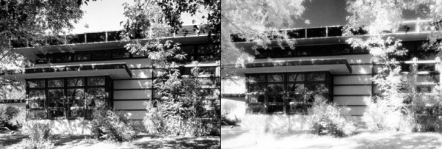

Infrared cameras have historically been one of the most important tools for artists working with interactive installations. In earlier years, an abundance of installations were set up in dark spaces for either aesthetic reasons or due to the technological limitations of display technology - aka dim projectors. In recent years, as installations move into well lit spaces and tracking algorithms improve, infrared camera relevance has started to shift. However, they still have some unique capabilities that come in handy for certain types of installations.
As a quick primer, visible light goes from 400-700nm, but certain cameras have the ability to see infrared light from 700-900nm. This allows you to capture things that are not visible to the human eye, like IR tracking lights or a dark space illuminated by infrared light. Most cameras that aren't marketed as exclusively IR capable have infrared filters that block IR light, but in some cases, that filter can be manually removed. In order to limit a camera's ability to only see in infrared light, some may need filters that block all visible light - more info on that here
There isn't a specific go-to camera for infrared these days. You can modify certain RGB cameras by removing their infrared filter..................[WIP]
For the next level up, the other common one is the Point Grey Firefly. One tip for this one is to go ahead and buy only the monochrome version of this camera, as the color version has the additional color filter layers that can impact image quality and response. I stick with the firewire version of this camera for the bandwidth, but that can limit you on cable length (you can really only get firewire out about 10-15ft without using a repeater or amplifer, so keep that in mind when building equipment lists). The Firefly will also take a range of lenses that give you an insanely large aperture of around 1.4-1.2f and will be able to give you a much brighter image than a standard webcam. You WILL need a visible light filter for the Firefly to only get IR bands though. See Golan Levin's article on choosing the right IR filter for your application. In addition to the Point Grey, you can check out these cameras from Imaging Source.
Connection Types: USB 2 (Playstation Eye or another webcam - modified), USB 3 (Point Grey Flea 3), Kinect's IR cam, Composite/Firewire (old Sonycam's with night vision)
Resolution Range: You can generally get the same resolutions in IR that you can in regular webcams. There are plenty of tutorials out there for modifying standard webcams to only process IR light.
**Range of effectiveness:**Generally the same as a webcam (1ft-50ft or .3-16m). Some IR cams like the Point Grey have a wider range of security camera lenses for various zoom ranges if you need to do tracking from far away.
Infrared Pros:
Infrared Cons:
Optimal environment for round the clock reliability
Room with a steady amount of IR light, either artificial or coming from a point source. Undesired sunlight can blow out an IR cam if the aperture isn't set right or if it doesn't have an automatic adjustment.
Troublesome environments
A dark room with insufficient IR light. A lot of normal light bulbs will still show up in IR even if they don't put out enough light to illuminate the IR spectrum, so keep an eye out for those in the background as pesky tracking distractions.
Further Reading for IR cams
Frieder Weiss's writeup on IR cameras and equipment -2008
Other IR camera suggestions: Cheap Infrared CCTV cams work well, but you'll need a capture device Sony CCTV cam good in low light (needs light filter) The Sony M183 or M383 are classic low latency cams used for IR sensing, but are now discontinued, but check eBay.